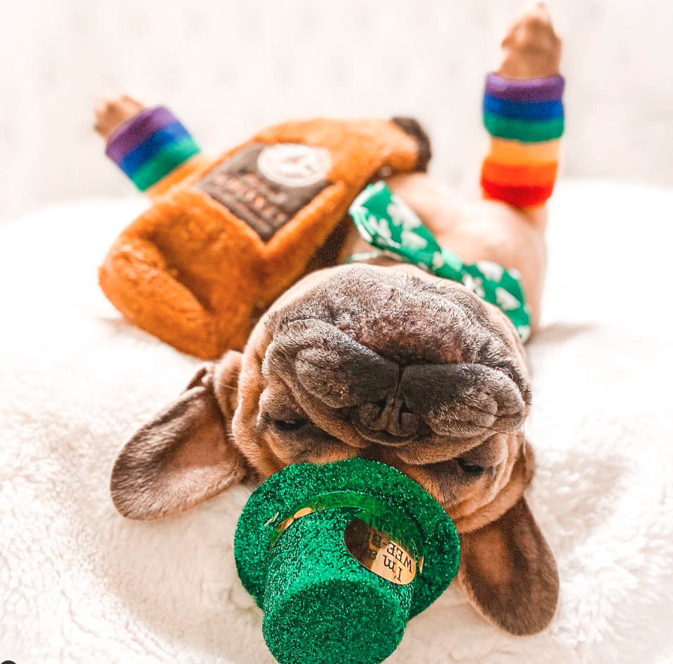
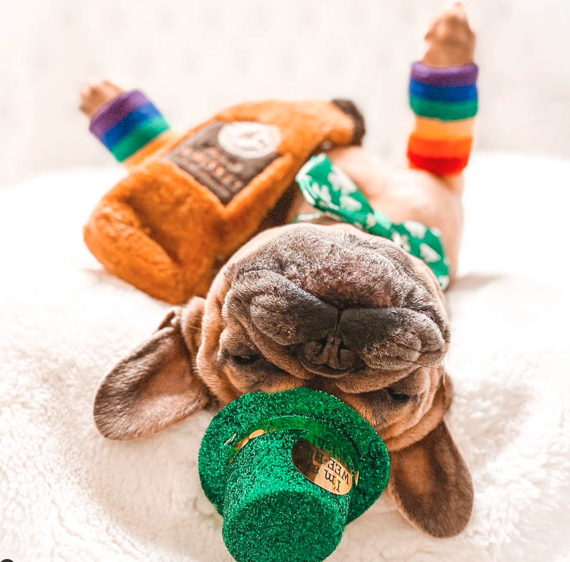
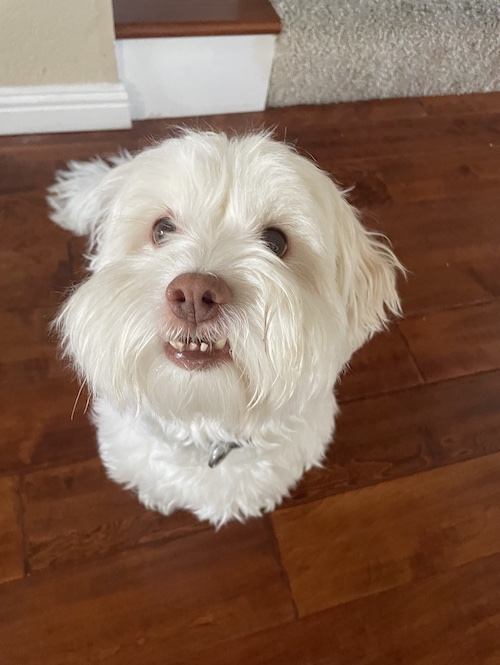

Pets
Bacon Q Dog

Bacon Q. Dog is a 9yr old labradoodle. He prefers to spend his days lounging among the three different beds/couches that his family has gifted him. He enjoys a walk or two around the neighborhood, as long as he can pretend that he doesn't see any of the other animals to avoid the embarrassment of not wanting to admit he has no wolf-like skills in chasing them.
At night just as the rest of the family is ready to relax, Bacon suddenly wants to release all of his energy. He will place his toys on a mini couch and frantically drag the couch around, giving his toys "a ride." There is also a lot of rolling. Lots and lots of rolling.
Photo Gallery


Likes
- Belly rubs
- Playing tug-of-war
- Sneaking onto the couch
- Colleen van Lent
Rocco
Rocco is a 8 year old instadog that loves to go on adventures and make firends along the way. You can find him on his Instagram page (@RoccoAdventures) where he shares snippets of his exciting journeys and heartwarming encounters with friends from all walks of life. Rocco's infectious enthusiasm and charming personality shine through in every post, making him a beloved figure in the online pet community.
When he's not busy exploring the world, Rocco enjoys spending time with his family and playing with his favorite toys. He also loves to eat, and his favorite food is chicken.
Photo Gallery
 

Likes
- Going on adventures
- Making new friends
- Playing with his favorite toys
- Eating chicken
Fitz

Fitz is a sweet and sporty Boston Terrier who just turned 7! He loves chasings tennis balls, chipmunks, squirrels, and birds. Often found sitting by the fire in wintertime, and in sun patches when available. He’s energetic, mischievous, and easily bored. He loves people and gets grumpy if left without a lap too long.
He loves barking up trees, running around on the lawn, and digging in the dirt looking for moles. He especially likes getting treats and whines when he comes inside and doesn't get a snack.
Photo Gallery


Likes
- Chasing tennis balls
- Chipmunks
- Squirrels
- Birds
- People
- Getting treats
Juno

No one knows exactly what breed Juno is, but that makes him all the more special. He was adopted before he was one year old; despite this and his German shepherd-esque looks, he stayed close to the same size, hovering around 50 lbs into adulthood. At the weathered age of ten years old, Juno is dealing with hip problems, but manages to stay in good spirits.
One of Junos favorite pastimes is finding the dirtiest puddle within a one-mile radius and making sure every inch of him makes contact with said puddle. If rolling around in dirt was an Olympic sport, Juno would have been the one that facilitated its inclusion into the Olympics.
Photo Gallery


Likes
- Rolling in dirt
- Being a silly boy
- Head pats
- Artem Saakov
Pluto
Pluto is a five year old rescue dog of an unknown breed. He was found wandering alone and taken to the Valley Humane Society where he found his new family. From a young age, Pluto always had a special personality, he was known for being very very lazy! He spends most of his time staring out the window to keep watch of his house. Don't let the laziness fool you because Pluto defends his family from the mailman and squirrels every single day.
Aside from his job as defender of the house, Pluto likes to have fun. Pluto’s favorite part of the day is his daily walk. Sometimes he even gets to go to the park and meet his neighbors. He also loves his toy duck, and only his toy duck. As a dog, it's in his nature to hunt and so he makes sure to get some practice with his toy duck.
Photo Gallery


Likes
- Staring out the window
- Going on walks
- His toy duck
- Aditi Kagalkar